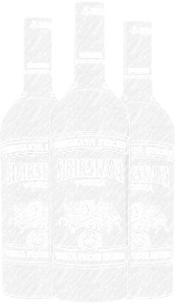
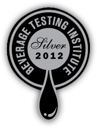
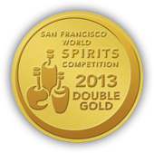
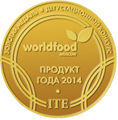

Традиции качества
«Сибирская» – одна из самых знаменитых русских водок, которая, наряду с такими всемирно известными марками как «Московская», «Столичная», «Русская» создала славу советской водочной промышленности. С 1977 г., когда было начато массовое произво- дство водки под товарным знаком «Сибирская», и до сих пор она изготавливается по клас-сической технологии, с использованием только натуральных ингредиентов.
«Сибирская» – это водка для истинных ценителей крепкого алкоголя: мужественных, как настоящие сибиряки и суровых, как сибирские морозы. Название «Сибирская» вызывает ассоциации с необозри- мыми таежными просторами, мощью вековых деревьев и молчаливой красотой сибирской природы, элегантный лаконичный дизайн бутылки, выдержанный в холодных оттенках, подчеркивает первозданную чистоту содержимого, а образ лихой русской тройки
на этикетке символизирует настоящую русскую душу.
История
Водка «Сибирская» ведет свою историю с 1976 года, когда
лучшими советскими технологами была разработана оригина-
льная рецептура водки «Сибирская». А уже в 1977 году она
впервые появилась на прилавках отечественных магазинов, предложив покупателю новый по тем временам стандарт
качества: спирт самой высокой очистки («Экстра», а впосле-
дствии «Люкс») и крепость в 45% об.
Бренд оказался успешным: лихая русская тройка на этикетке, ассоциации с русской зимой и крепкими сибирскими морозами вызвали большой интерес у отечественных, а впоследствии
и у иностранных потребителей. В народе «Сибирскую»
полюбили и назвали «водка с особенным характером».
Практически сразу же водка «Сибирская» вышла на высокие рыночные показатели. По итогам 1977 года объем её продаж
на внутреннем рынке составил 6,2 млн. дал.

Награды
2012 г.
Chicago Beverage
Tasting Silver

2013 г.
San Francisco,
Double Gold

2014 г.
World Food
(Moscow) Gold

Экспортное качество
История экспорта водки «Сибирская» насчитывает более 30-ти лет. В 1981 году товарный знак «Sibirskaya»/«Сибирская» был зарегистрирован в виде этикетки. В этом же году начались поставки водки «Сибирская» на рынки Австрии, Исландии, Турции и ФРГ, чуть позже в Грецию, Данию, Норвегию, Швецию, Аргентину, Панаму, Финляндию, Бразилию, Колумбию, Новую Зеландию, Великобританию, Венесуэлу, Ирландию, Португалию, США, Канаду и Японию.
Традиционные для водки «Сибирская» крепость и вкус, колоритные образы Сибири и русской тройки на этикетке, символизирующие Россию, а также гарантированное
государством качество продукта, обеспечили интерес к «Сибирской» водке со стороны экспортеров и зарубежных потребителей.
Гарантия качества
Сегодня товарный знак «Сибирская» принадлежит государственному предприятию ФКП «Союзплодоимпорт», которое тщательно контролирует качество производимой
продукции на всех этапах технологического процесса.
Водка «Сибирская» имеет натуральный, простой и понятный состав, производится на российских предприятиях, где тщательно отслеживается соблюдение всех стандартов качества.
Высококачественный этиловый спирт из зернового сырья
в сочетании с настоем ядер кедровых орешков обеспечивают продукту чистый водочный аромат, облагороженный тонким кедровым оттенком. Специально подготовленная вода
и сахарный сироп придают водке «Сибирская» особую
мягкость и питкость. В рецептуру водки «Сибирская Strong»
дополнительно включен настоящий сибирский мед.